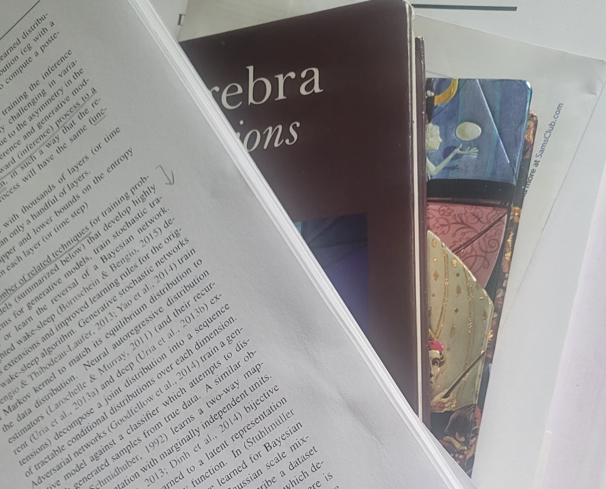
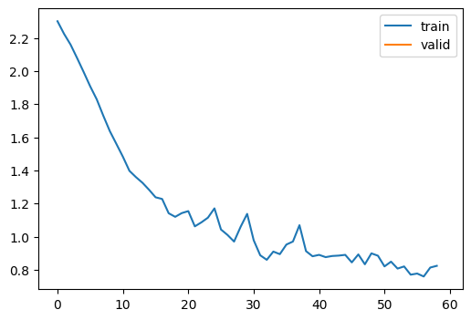
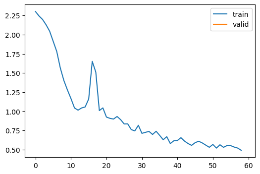

from google.colab import drive
drive.mount('/content/drive')Mounted at /content/drive
/content/drive/MyDrive/Colab Notebooksgalopy
September 9, 2023

In part 1, we looked at a basic learner and a callback learner. The basic learner’s code was hand-written without any flexibility. We would have to modify the learner if we want to change a metric. With a callback learner, we could use callbacks to change a metric or some additional behaviors such as before_fit, after_batch, etc.
In part 2, we will look at a more flexible version of learner and some useful callbacks, such as ProgressCB and LRFinderCB. ProgressCB draws a graph with train and validation loss and LRFinderCB allows us to find a learning rate very fast. This blog is based on lesson 16 of the FastAI course.
Let’s install and import libraries we need.
Mounted at /content/drive
/content/drive/MyDrive/Colab Notebooks ━━━━━━━━━━━━━━━━━━━━━━━━━━━━━━━━━━━━━━━ 519.6/519.6 kB 6.5 MB/s eta 0:00:00
━━━━━━━━━━━━━━━━━━━━━━━━━━━━━━━━━━━━━━ 115.3/115.3 kB 11.7 MB/s eta 0:00:00
━━━━━━━━━━━━━━━━━━━━━━━━━━━━━━━━━━━━━━ 194.1/194.1 kB 11.9 MB/s eta 0:00:00
━━━━━━━━━━━━━━━━━━━━━━━━━━━━━━━━━━━━━━ 134.8/134.8 kB 11.3 MB/s eta 0:00:00
━━━━━━━━━━━━━━━━━━━━━━━━━━━━━━━━━━━━━━ 268.8/268.8 kB 12.7 MB/s eta 0:00:00
━━━━━━━━━━━━━━━━━━━━━━━━━━━━━━━━━━━━━━━ 179.2/179.2 kB 2.5 MB/s eta 0:00:00import matplotlib as mpl
import torchvision.transforms.functional as TF
from contextlib import contextmanager
from torch import nn,tensor
from datasets import load_dataset,load_dataset_builder
from miniai.datasets import *
from miniai.conv import *
import logging
from fastcore.test import test_closex,y = 'image','label'
name = "fashion_mnist"
builder = load_dataset_builder(name)
dsd_features = builder.info.features.copy()
dsd_features['image'] = Array2D(shape=[1, 28*28], dtype='float32')
dsd = load_dataset(name, features=dsd_features)
dsd.set_format(type="torch")
@inplace
def sq(b): b[x] = [o.squeeze().div(255) for o in b[x]]
tds = dsd.map(sq, batched=True)
bs = 1024
dls = DataLoaders.from_dd(tds, bs)ProgressCB uses fastprogress to generate a graph for losses. It is beneficial to visualize how our model trains throughout each batch. This callback uses _log to overwrite learn.metrics._log. So, instead of printing losses, it creates the graph.
It is interesting to understand what’s going on in this code, but it is okay to skip.
class ProgressCB(Callback):
order = MetricsCB.order+1
def __init__(self, plot=False): self.plot = plot
def before_fit(self, learn):
learn.epochs = self.mbar = master_bar(learn.epochs)
self.first = True
if hasattr(learn, 'metrics'): learn.metrics._log = self._log
self.losses = []
self.val_losses = []
def _log(self, d):
if self.first:
self.mbar.write(list(d), table=True)
self.first = False
self.mbar.write(list(d.values()), table=True)
def before_epoch(self, learn): learn.dl = progress_bar(learn.dl, leave=False, parent=self.mbar)
def after_batch(self, learn):
learn.dl.comment = f'{learn.loss:.3f}'
if self.plot and hasattr(learn, 'metrics') and learn.training:
self.losses.append(learn.loss.item())
if self.val_losses:
self.mbar.update_graph([[fc.L.range(self.losses), self.losses],
[fc.L.range(learn.epoch).map(lambda x: (x+1)*len(learn.dls.train)), self.val_losses]])
def after_epoch(self, learn):
if not learn.training:
if self.plot and hasattr(learn, 'metrics'):
self.val_losses.append(learn.metrics.all_metrics['loss'].compute())
self.mbar.update_graph([[fc.L.range(self.losses), self.losses],
[fc.L.range(learn.epoch+1).map(lambda x: (x+1)*len(learn.dls.train)), self.val_losses]])We will build a flexible learner with decorators. There are two ways of defining it: with a class and wtih a function. They are both 11 lines of code. However, the function version is a bit weird because it has a wrapper and decorator inside of with_cbs. So, the class version might be easier to read.
Here is a simple decorator built with a class. It saves a name and prints a greeting with the name each time the function is called. Then we have a do_chores function that tells the person to finish any chore. It is a very friendly way of getting the job done.
Creating a decorator with f: <function do_chores>, name: Bobbyclass with_cbs:
def __init__(self, name):
self.name = name
def __call__(self, f):
def _f(o, *args, **kwargs):
try:
o.callback(f'before_{self.name}')
f(o, *args, **kwargs)
o.callback(f'after_{self.name}')
except globals()[f'Cancel{self.name.title()}Exception']: pass
finally: o.callback(f'cleanup_{self.name}')
return _fSo, here is our final version of the learner. It is longer than before, but it is not hard to understand. fit can take additional parameters, such as train, valid, cbs, and lr. train and valid tells whether to use train data or not and to use valid data or not. cbs can optionally add callbacks for fitting and removes them after fitting. lr can be added for fitting like callbacks.
Additionally, there are callbacks for one_batch, such as after_predict, after_loss, after_backward, and after_step.
class Learner:
def __init__(self, model, dls, loss_func=F.mse_loss, lr=0.1, opt_func=optim.SGD, cbs = None): fc.store_attr()
def fit(self, n_epochs=1, train=True, valid=True, cbs=[], lr=None):
try:
for c in cbs: self.cbs.append(c)
if lr is None: lr = self.lr
self.epochs = range(n_epochs)
self.opt = self.opt_func(self.model.parameters(), lr=lr)
self._fit(train, valid)
finally:
for c in cbs: self.cbs.remove(c)
@with_cbs('fit')
def _fit(self, train, valid):
for self.epoch in self.epochs:
if train: self.one_epoch(True)
if valid: torch.no_grad()(self.one_epoch)(False)
def one_epoch(self, training):
self.model.train(training)
self.dl = self.dls.train if training else self.dls.valid
self._one_epoch()
@with_cbs('epoch')
def _one_epoch(self):
for self.batch in self.dl: self._one_batch()
@with_cbs('batch')
def _one_batch(self):
self.predict()
self.callback('after_predict')
self.get_loss()
self.callback('after_loss')
if self.training:
with torch.no_grad():
self.backward()
self.callback('after_backward')
self.step()
self.callback('after_step')
self.zero_grad()
def callback(self, name): run_cbs(self.cbs, name, self)
def __getattr__(self, o):
if o in ['predict', 'get_loss', 'backward', 'step', 'zero_grad']:
return partial(self.callback, o)
raise AttributeError(o)
@property
def training(self): return self.model.training| accuracy | loss | epoch | train |
|---|---|---|---|
| 0.623 | 1.160 | 0 | train |
| 0.702 | 0.839 | 0 | eval |

Yay, it trains and draws a graph as well! If you feel adventurous, you can rewrite this as much as possible without peeking. After that, you can get a good sense of how it works. Then, look back and check the answer. I was having a weird error because I was writing self.model.training = training instead of self.model.train(training). My model did not change into validation mode and tried to do a backward step! Then, it gave me an error. I was able to fix the error by looking at Jeremy’s code.
By inheriting our learner, we can create TrainLearner by defining the training process, such as predict, get_loss, backward, etc. This way, we don’t have to type learn.preds because it belongs to self. And methods don’t take learn either.
Also, by inheriting from TrainLearner, we can create MomentumLearner. Instead of setting gradients to zero on zero_grad step, we keep some of the gradients by multiplying them by momentum. This way, gradients move smoothly like water flowing down the drain, and it is faster to train.
class MomentumLearner(TrainLearner):
def __init__(self, model, dls, loss_func=F.mse_loss, lr=0.1, opt_func=optim.SGD, cbs=None, mom=.85):
self.mom = mom
super().__init__(model, dls, loss_func, lr, opt_func, cbs)
def zero_grad(self):
with torch.no_grad():
for p in self.model.parameters(): p *= self.mom| accuracy | loss | epoch | train |
|---|---|---|---|
| 0.663 | 0.963 | 0 | train |
| 0.800 | 0.553 | 0 | eval |

The accuracy is better than the pervious one.
Of course we can do the same thing with callbacks.
It’s time to look at LRFinderCB, which allows us to find the learning rate very quickly. It only uses the training part. In every batch, the callback increases the learning rate by a certain amount. It also keeps the minimum loss. This value gets updated if a smaller loss is found. If the current loss is bigger than three times the minimum loss, training stops. Then it plots the loss and learning rate.
class LRFinderCB(Callback):
def __init__(self, lr_mult=1.3): self.lr_mult = lr_mult
def before_fit(self, learn):
self.losses, self.lrs = [], []
self.min_loss = math.inf
def after_batch(self, learn):
if not learn.training: raise CancelEpochException()
loss = learn.loss.detach().cpu()
self.losses.append(loss)
self.lrs.append(learn.opt.param_groups[0]['lr'])
if loss < self.min_loss: self.min_loss = loss
if loss > 3 * self.min_loss: raise CancelFitException()
for p in learn.opt.param_groups:
p['lr'] *= self.lr_multOkay, we got it. The ideal learning rate is a bit before it hits the absolute minimum loss, so we could use 0.1 or something smaller in this case. Why not choose the point when the loss is at the minimum?
Let’s say we are playing mini golf. We are on the top of the ramp and the hole is at the bottom. The surface of the ramp has many little obstacles, which could change the course of the trajectory of the golf ball. The golf ball could get stuck on the obstacle if it went too slow and could pass the hole if it went too fast. So there has to be an ideal speed the golf ball has to tavel. By speeding up the speed of the golf ball each second from the top, we could figure out the speed we need. By this analogy, it was too fast when the ball hit the hole, so we want to use the speed before it hit the bottom.
In this blog, we covered the final version of the learner which had flexibility and rigidity. Instead of changing the learner to modify how the model trains, we could add or remove callbacks. We could also inherit learner if we wanted to. We also looked at some interesting callbacks, such as LRFinderCB and ProgressCB.